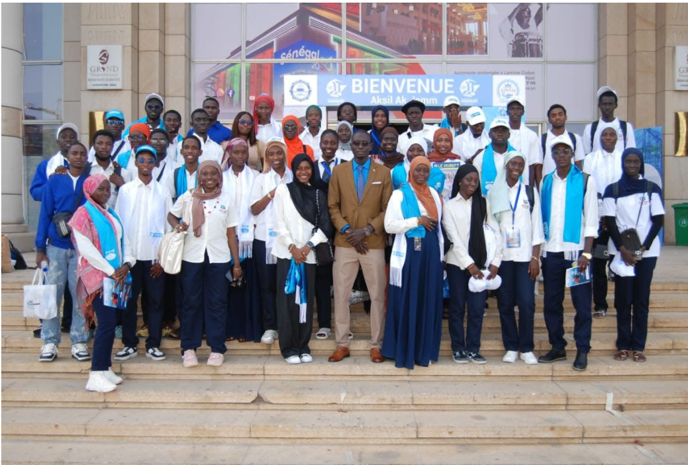

Événement
25 Juin 2026
Journée Internationale des Gens de Mer
L'UFR STA informe les étudiants intéressés par les métiers du transport maritime, de la logistique et de l'ingénierie navale de la tenue de la Journée Internationale des Gens de Mer organisée autour du thème : « Transporter le commerce mondial, supporter les risques. »
Retour